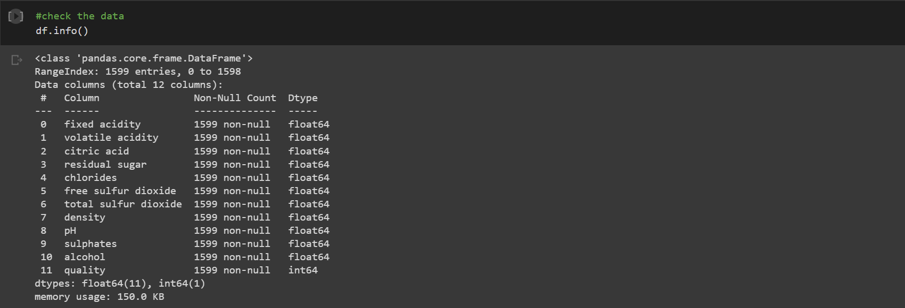
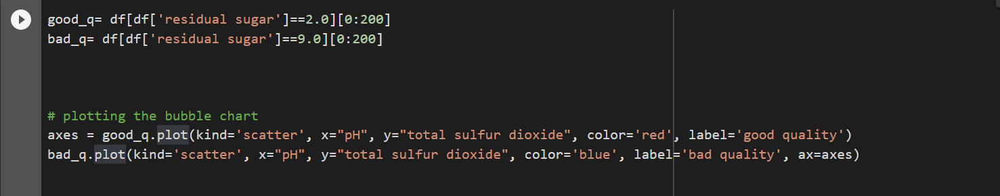
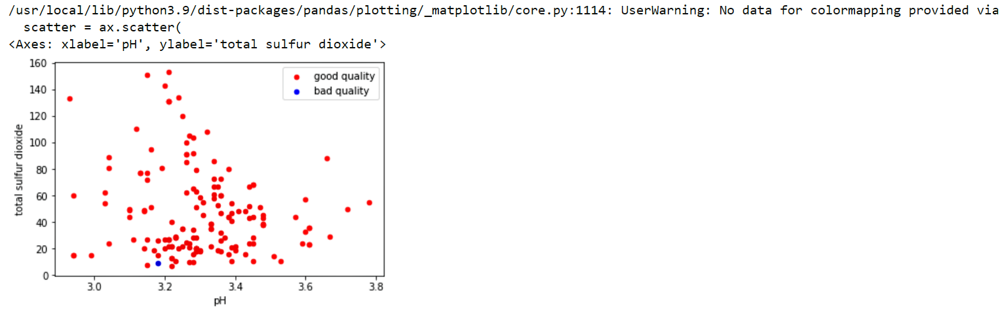

Classification Modelling for Wine quality
using the Support Vector Machine (SVM) Algorithm
Data Source: UCI Machine Learning Repository
Libraries and Packages: Scikit-learn, Python-Numpy, Pandas
Outline
Understanding the objective
Methodology
1. Data Setup
2. Data Cleaning
3. Distribution of classes-Splitting the data
4. Modelling with SVM
5. Model Evaluation
6. Saving and Loading
7. Summary of Results
Objective
In this project we will be predicting the quality of wine based on 11 input variables (composition). The quality of wine affects the quality and quantity of purchase, however, certifying the product quality is usually a cost intensive process in the laboratory. Therefore, building a model for prediction has become of a great importance to the industry.Automating this process saves considerable amount of cost and resources. The quality of wine can be judged by the smell, flavor, and color of the beverage. But machines obviously cannot taste, smell, or perceive the colorful nuances of wine as humans do. Thus, machines require more detailed and clear information (i.e., feature variables), so that one can build an ML model for wine quality prediction. The machine learning classifier takes some input data and tries to predict which class it belongs to: low-quality wine or high-quality wine using a specified criteria. Few other classifiers used for this type of projects include K-Nearest Neighbour(KNN), linear Regression, Naive Byes, Artificial Neural Networks e.t.c. The SVM was used in this project.
Features
The target variable is based on scores from 0 to 10, and the product is classified based on an assigned value of this score.
Methodology
1.Data Setup
- Pip installing the dependencies.
- Importing the dataset and required libraries
2. Data Cleaning
The data was inspected for null values to remove abnormality. However, the dataset showed no missing values. 3.Distribution of Classes
Here i chose the feature(residual sugar) and assigned a good quality of wine as the one in which the residual sugar is 2.0 and bad as 9.0. 
